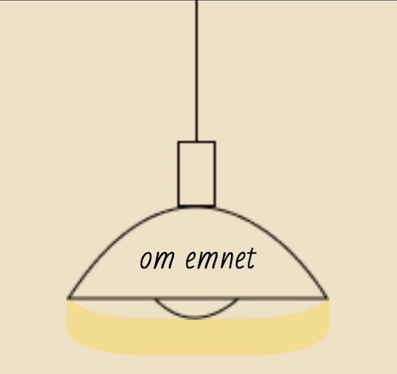
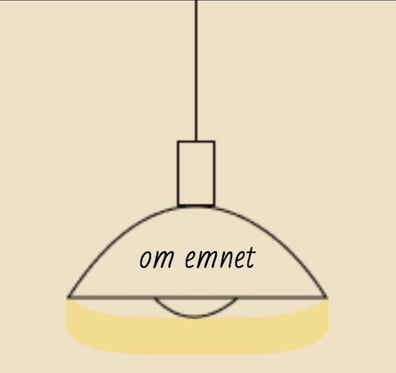

grundlæggende indhold
passionssite
firemandsgrupper blev inddelt to og to, men grundet noget sygdom i vores gruppe, endte vi alle med hvert vores bud på et passionssite om violas filmpassion. vi besøgte viola og filmede
interview på én iphone, og optage ekstern lyd via røde reporter app'en på en anden iphone.
vi brugte wetransfer til at overføre video- og lydfiler samt stilbilleder til hinanden, så vi kunne starte redigeringsprocessen hver for sig. vi skulle redigere passionsvideoen til en
varighed på præcis 60 sekunder. det var en udfordring at få så meget materiale ned på 1 minut - men jeg lykkedes!
i dette tema fik jeg kendskab til adobe premiere pro og adobe after effects. i after effects fik jeg lavet en lottiefile, som jeg brugte til hero-sektionen på mit passionssite.
virksomhedssite
vi tog på besøg hos café blå time og mødte ejeren, hvor vi tog stemningsbilleder af atmosfæren på caféen. det brugte vi til at formidle et nyt design til hans nuværende, grå og halvtomme
hjemmeside.
caféen har mange ældre stamgæster, men der var mange unge som også besøgte caféen, mens vi var på besøg. derfor ville vi bevare caféens autentiske atmosfære, samtidig med at vi ville give
hjemmesiden et løft med et mere moderne og friskt udtryk, der taler til alle aldersgrupper.
da alle i gruppen skulle stå for mindst én side at kode, skulle der opnås enighed i en fælles stil. vi gav alle forskellige bud på style tiles, wireframes og prototype. enigheden om stilen
til sitet, er f.eks. blevet samlet til dette style tile:
med dette style tile har vi udviklet vores individuelle sider. vi har gennem figma, github, trello og selvfølgelig daily scrum kunne følge med i hinandens arbejde, hvilket har sikret en god
koordinering og et ensartet resultat på tværs af hele sitet.


 
